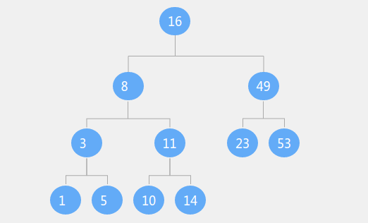
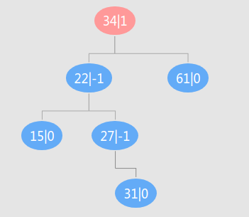

<!DOCTYPE html>
<html lang class="loading">
<head><meta name="generator" content="Hexo 3.8.0">
    <meta charset="UTF-8">
    <meta http-equiv="X-UA-Compatible" content="IE=edge,chrome=1">
    <meta name="viewport" content="width=device-width, minimum-scale=1.0, maximum-scale=1.0, user-scalable=no">
    <title>数据结构-AVL平衡二叉搜索树 - Linco</title>
    <meta name="apple-mobile-web-app-capable" content="yes">
    <meta name="apple-mobile-web-app-status-bar-style" content="black-translucent">
    <meta name="google" content="notranslate">
    <meta name="keywords" content="Linco, Blog,"> 
    <meta name="description" content="AVL树定义​     
AVL(平衡二叉搜索树) 是一种特殊的搜索树, 在理解AVL之前, 先熟悉一下普通的二叉搜索树
​    
二叉搜索树结构很简单:

二叉树

节点都有值,且值唯一

若子,"> 
    <meta name="author" content="Linco"> 
    <link rel="alternative" href="atom.xml" title="Linco" type="application/atom+xml"> 
    <link rel="icon" href="/img/icon.png"> 
    <link rel="stylesheet" href="//cdn.jsdelivr.net/npm/gitalk@1/dist/gitalk.css">
    <link rel="stylesheet" href="/css/diaspora.css">

</head>
</html>
<body class="loading">
    <span id="config-title" style="display:none">Linco</span>
    <div id="loader"></div>
    <div id="single">
    <div id="top" style="display: block;">
    <div class="bar" style="width: 0;"></div>
    <a class="icon-home image-icon" href="javascript:;" data-url></a>
    <div title="播放/暂停" class="icon-play"></div>
    <h3 class="subtitle">数据结构-AVL平衡二叉搜索树</h3>
    <div class="social">
        <!--<div class="like-icon">-->
            <!--<a href="javascript:;" class="likeThis active"><span class="icon-like"></span><span class="count">76</span></a>-->
        <!--</div>-->
        <div>
            <div class="share">
                <a title="获取二维码" class="icon-scan" href="javascript:;"></a>
            </div>
            <div id="qr"></div>
        </div>
    </div>
    <div class="scrollbar"></div>
</div>

    <div class="section">
        <div class="article">
    <div class="main">
        <h1 class="title">数据结构-AVL平衡二叉搜索树</h1>
        <div class="stuff">
            <span>六月 15, 2019</span>
            
  <ul class="post-tags-list"><li class="post-tags-list-item"><a class="post-tags-list-link" href="/tags/java/">java</a></li><li class="post-tags-list-item"><a class="post-tags-list-link" href="/tags/数据结构/">数据结构</a></li><li class="post-tags-list-item"><a class="post-tags-list-link" href="/tags/算法竞赛基础/">算法竞赛基础</a></li></ul>


        </div>
        <div class="content markdown">
            <h3 id="AVL树定义"><a href="#AVL树定义" class="headerlink" title="AVL树定义"></a>AVL树定义</h3><p>​     </p>
<p>AVL(平衡二叉搜索树) 是一种特殊的搜索树, 在理解AVL之前, 先熟悉一下普通的<a href="https://wc.yooooo.us/wiki/%E4%BA%8C%E5%85%83%E6%90%9C%E5%B0%8B%E6%A8%B9" target="_blank" rel="noopener">二叉搜索树</a></p>
<p>​    </p>
<p>二叉搜索树结构很简单:</p>
<ol>
<li><p>二叉树</p>
</li>
<li><p>节点都有值,且值唯一</p>
</li>
<li><p>若子节点存在, 则满足: 左节点值&lt;本节点&lt;右节点</p>
<p></p>
</li>
</ol>
<p>​     </p>
<p>二叉搜索树最理想情况下插入, 删除, 更新的复杂度为 （O(log2n)）,当搜索树深度压缩到最低时能够做到. 更多的时候二叉搜索树操作的复杂度介于（O(log2n)）- （O(n)）之间, 当二叉树所有节点只有一个子节点时, 二叉树退化为链表, 操作复杂度为（O(n)）</p>
<p>​     </p>
<p>为了解决二叉搜索树结构退化的问题, 人们提出了平衡二叉搜索树(AVL), 在搜索树的基础上增加了一个条件: <strong>每个节点的左右子树高度差不大于1</strong></p>
<p></p>
<p>如上图, 就是一棵典型的AVL树</p>
<p>​    </p>
<p>由于AVL树将高度压缩, 所以查找操作的复杂度为最低的 O(log2n) , 而代价是节点增删操作的成本会大幅提高, 因为每次增删节点都需要判断和调整, 使二叉树满足于AVL的平衡条件</p>
<p>​    </p>
<p>只有根节点的树是一棵AVL树, 后续过程每插入一个节点就维护一次树结构, 这是构造AVL树的前提</p>
<p>​    </p>
<p><strong>二叉查找树的节点增删查操作的过程</strong></p>
<p>​    <strong>查</strong>: 从根节点开始判断, 将查找值a与节点值b比较, a小则查找左节点, a大则查找右节点, 直到找到或节点不存在</p>
<p>​    </p>
<p>​    <strong>增</strong>: 从根节点开始判断, 将待插入值a与节点值b比较, a小则查找左节点, a大则查找右节点, 如果相等则结束插入. 直到找到相等或节点不存在, 插入a值到最后定位的节点位置</p>
<p>​    </p>
<p>​    <strong>删</strong>: 按”查”的方法找到节点, 节点可能有0到2个子节点, 如果有2个子节点, 用右子树最小节点(最左边, 中序遍历待删除节点的下一位)取代待删节点的位置即可. 另外, 没找到节点则报错</p>
<p>​    </p>
<h4 id="平衡的判断"><a href="#平衡的判断" class="headerlink" title="平衡的判断"></a>平衡的判断</h4><p>很多AVL文章没有对平衡的判断算法做讲解. 平衡的判断过程和调整过程同等重要, 甚至,平衡过程的算法选取是以判断过程的结果为导向的. 然而很多资料忽略了判断的过程, 最终的算法只是空壳理论无法落地, 甚至有些看似完整, 实则因为缺乏判断过程的算法支撑, 错误判断树结构 (凭借一条简单的规律做判断, 但所依照的规律并经不起推敲. 或者使用某个节点内变量判断, 却没有完整地更新受树结构改变影响的全部节点变量值–我看到很多类似代码都没有实现这一步, 实际上其中有些方案需要维护的节点数量庞大, 即便实现, 重新计算节点变量值的性能消耗也十分不合理). 而判断结果不一定准确将导致平衡错误或跳过平衡</p>
<p>​    </p>
<p>​      性能比较适中的判断平衡方法有两种:</p>
<p>​    </p>
<ul>
<li>使用平衡参数标记</li>
<li>使用子树深度标记 (而不是节点深度标记)</li>
</ul>
<p>​    </p>
<p>这里只讨论第一种标记方法的使用和维护. 感兴趣的话可以思考子树深度标记方法的使用, 维护和性能压缩</p>
<p>​    </p>
<p>为每个节点添加标记位, 记录左子树和右子树的高度差, 左边高出一层标记+1, 右边高出一层标记-1, 否则0, 参考下方示意图</p>
<p></p>
<p>​    </p>
<p>使用&amp;维护:</p>
<p>新增节点</p>
<p>​    增加一个节点时, 将节点平衡参数设置为0, 从节点向上更新平衡参数, 参考下面状态转移表</p>
<p>​            </p>
<table>
<thead>
<tr>
<th>平衡参数\节点位置\操作</th>
<th>左</th>
<th>右</th>
</tr>
</thead>
<tbody>
<tr>
<td>-1</td>
<td>节点平衡参数置 0, 停止更新</td>
<td>记录当前节点, 调用平衡算法</td>
</tr>
<tr>
<td>0</td>
<td>节点平衡参数置 1, 向上更新</td>
<td>节点平衡参数置 -1, 向上更新</td>
</tr>
<tr>
<td>1</td>
<td>记录当前节点, 调用平衡算法</td>
<td>节点平衡参数置 0, 停止更新</td>
</tr>
</tbody>
</table>
<p>​    </p>
<p>删除节点</p>
<p>​    根据下面三条规则:</p>
<ul>
<li><p>​    删除一个叶节点或单子叶节点, 从删除点的上一级开始向上更新</p>
<ul>
<li><p>删除一个双子叶节点, 从替换的节点原位置(不懂的话看前面二叉搜索树删除节点过程)的上一级开始向上更新</p>
</li>
<li><p>更新的状态转移表和上面新增操作<strong>相反</strong></p>
</li>
</ul>
</li>
</ul>
<p>​            </p>
<table>
<thead>
<tr>
<th>平衡参数\来源位置\操作</th>
<th>右</th>
<th>左</th>
</tr>
</thead>
<tbody>
<tr>
<td>-1</td>
<td>节点平衡参数置 0, 停止更新</td>
<td>记录当前节点, 调用平衡算法</td>
</tr>
<tr>
<td>0</td>
<td>节点平衡参数置 1, 向上更新</td>
<td>节点平衡参数置 -1, 向上更新</td>
</tr>
<tr>
<td>1</td>
<td>记录当前节点, 调用平衡算法</td>
<td>节点平衡参数置 0, 停止更新</td>
</tr>
</tbody>
</table>
<p>​        </p>
<h4 id="平衡方法"><a href="#平衡方法" class="headerlink" title="平衡方法"></a>平衡方法</h4><p>看平衡方法前要先区分不平衡的类型, 按不同类型采取不同的平衡操作</p>
<p>​    </p>
<p>上面”平衡的判断” 不仅判断了树是否平衡, 还找到了一个左右子树高度差大于1的结点(如果不平衡的话), 暂且将这个结点称为”不平衡点”. 以不平衡点为根节点, 提取出子树可能有以下四种结构</p>
<p></p>
<p>​    从左到右分别为 “左左”, “左右”, “右左”, “右右”</p>
<p>​        </p>
<p>比如图一, 左子树的左边高出, 归类为”左左”, 其他类似</p>
<p>​    </p>
<p>按照”平衡的判断”得出的树结构, 提取”不平衡点”和”不平衡点深侧的子树”的平衡参数, 可以比较简单地知道当前的子树处于哪一种不平衡状态</p>
<p></p>
<p>​    </p>
<p>如图的树, 插入 31 节点后, 更新到 34 节点发现需要触发平衡</p>
<p></p>
<p>​    </p>
<p>​    </p>
<p>我们画图可以直接看出平衡类型, 但计算机并不认识图的结构, 也不会上面的图, 所以需要提供统一的识别方法: </p>
<p>​    </p>
<p>此时的判断是, 取不平衡点 34 , 参数为1, 左子树高出, 得到第一位类型”左”, 取左子树, 参数值为-1, 得到第二位类型为”右”, 所以不平衡为”左右”类型</p>
<p>​    </p>
<p>四种类型的内部平衡方法 (不包括不平衡节点的上层结构)</p>
<p>​    </p>
<p><strong>左左树的平衡</strong>:</p>
<ol>
<li>将不平衡点向右旋转, 让左子节点代替不平衡点, 让左子节点的右子节点(有的话)挂靠在原不平衡左子节点位置</li>
<li>原不平衡点平衡参数值置为 0, 原左子节点平衡参数置为 0, 其他值不变</li>
</ol>
<p>​    </p>
<p>值得注意的是如果原左子节点存在右子节点, 那么基于每次只插入或删除一个节点(即本次插入前树是平衡的)这一大前提, 平衡后原不平衡点的左右子树深度必定相等(不信的话按类型穷举试试, 包括没有右子节点的场景)</p>
<p>​    </p>
<p>这里的”1”过程称为右旋, 后面直接用”右旋”代表本操作</p>
<p>​    </p>
<p><strong>右右树的平衡:</strong></p>
<ol>
<li>将不平衡点向左旋转, 让右子节点代替不平衡点, 让右子节点的左子节点(有的话)挂靠在原不平衡右子节点位置</li>
<li>原不平衡点平衡参数值置为 0, 原左子节点平衡参数置为 0, 其他值不变</li>
</ol>
<p>​    </p>
<p>这里的”1”过程称为右旋, 后面直接用”右旋”代表本操作</p>
<p>​    </p>
<p><strong>左右树的平衡:</strong></p>
<ol>
<li><p>不平衡点的左子树左旋</p>
</li>
<li><p>不平衡点右旋</p>
</li>
<li><p>查询新不平衡点平衡参数, 若为1, 左节点平衡参数设置为0, 右节点为-1; 若为-1, 左节点1, 右节点0</p>
</li>
</ol>
<p>​    </p>
<p>第”3”步的本质是判断最深层节点在新不平衡点的左侧或是右侧, 如果在左侧, 左旋使深层节点所在一支挂靠在原左旋结构根节点右侧, 补充了左旋结构左侧的高度差, 左旋结构根节点平衡参数为0, 第二步进行右旋后, 原右旋结构根节点的左侧挂载着初始左旋结构浅层节点的一支, 最终左侧深度低, 平衡参数为-1; 如果最深层节点在新不平衡点右侧则相反. </p>
<p>​    </p>
<p>新不平衡点原本是旧不平衡点的子结点, 也是最深层节点的直接或间接父节点, 已知结果是触发了不平衡判断, 则在判断平衡过程, 直到传递到达旧不平衡点之前各中间结点的平衡参数都由0置为深层节点所在一侧, 所以直接取平衡参数可知结果位置. 此外, 由于搜索树的特性, 这两点值的大小关系是恒定的, 也就意味着平衡前左右关系=平衡后左右关系</p>
<p></p>
<p>​     </p>
<p>原理稍微有点复杂, 记住1, 2, 3的结论也是可行的, 图1为上文触发调整的树, 图2-4是三步平衡过程</p>
<p>​    </p>
<p><strong>右左树的平衡:</strong></p>
<ol>
<li><p>不平衡点的右子树右旋</p>
</li>
<li><p>不平衡点左旋</p>
</li>
<li><p>查询新不平衡点平衡参数, 若为1, 左节点平衡参数设置为0, 右节点为-1; 若为-1, 左节点1, 右节点0</p>
</li>
</ol>
<p>​     </p>
<p> 第三步原理和上面相仿, 不再赘述</p>
<p>​    </p>
<hr>
<p>这里是四种类型的不平衡结构的平衡方法, 如果不平衡结构只是二叉搜索树的子树, 平衡后完整的树可能还需要维护部分节点的平衡参数. 外部结构的平衡在下面第 4 步.</p>
<p>​    </p>
<p>​    </p>
<h4 id="增删操作的平衡"><a href="#增删操作的平衡" class="headerlink" title="增删操作的平衡"></a>增删操作的平衡</h4><p>​    </p>
<p>无论是增加还是删除节点, 按下面顺序进行</p>
<p>​    </p>
<ol>
<li>依照普通二叉查找树的方式改变树结构(不懂的话往前翻)</li>
<li>更新平衡参数,判断平衡状态</li>
<li>按对应不平衡的调整算法调整树结构和变更特定节点平衡参数</li>
<li>删除操作触发平衡, 平衡后继续向上传递本侧删除事件(看上表), 插入操作平衡后不传递</li>
</ol>
<p>​    </p>
<p>​    </p>
<p>​    </p>
<p>因为算法基本原创, 单理论就写了这么多, 作图也不少, 总之挺累的. 代码就等下一篇了 <a href="https://lincoxiaoq.github.io/" target="_blank" rel="noopener">数据结构-AVL平衡二叉搜索树的代码实现 (待续)</a></p>

            <!--[if lt IE 9]><script>document.createElement('audio');</script><![endif]-->
            <audio id="audio" loop="1" preload="auto" controls="controls" data-autoplay="true">
                <source type="audio/mpeg" src>
            </audio>
            
                <ul id="audio-list" style="display:none">
                    
                        <li title="0" data-url="/music/default_bgm.mp3"></li>
                    
                        <li title="1" data-url="/music/big_fish_piano.mp3"></li>
                    
                </ul>
            
        </div>
        
    <div id="gitalk-container" class="comment link" data-ae="false" data-ci="978518cc439cd352dd0b" data-cs="2d89825e7db6df72d065714d6b4ac1ce1829b14e" data-r="LincoXiaoQ.github.io" data-o="LincoXiaoQ" data-a="LincoXiaoQ" data-d="false">查看评论</div>


    </div>
    
</div>


    </div>
</div>
</body>
<script src="//cdn.jsdelivr.net/npm/gitalk@1/dist/gitalk.min.js"></script>
<script src="//lib.baomitu.com/jquery/1.8.3/jquery.min.js"></script>
<script src="/js/plugin.js"></script>
<script src="/js/diaspora.js"></script>
<link rel="stylesheet" href="/photoswipe/photoswipe.css">
<link rel="stylesheet" href="/photoswipe/default-skin/default-skin.css">
<script src="/photoswipe/photoswipe.min.js"></script>
<script src="/photoswipe/photoswipe-ui-default.min.js"></script>

<!-- Root element of PhotoSwipe. Must have class pswp. -->
<div class="pswp" tabindex="-1" role="dialog" aria-hidden="true">
    <!-- Background of PhotoSwipe. 
         It's a separate element as animating opacity is faster than rgba(). -->
    <div class="pswp__bg"></div>
    <!-- Slides wrapper with overflow:hidden. -->
    <div class="pswp__scroll-wrap">
        <!-- Container that holds slides. 
            PhotoSwipe keeps only 3 of them in the DOM to save memory.
            Don't modify these 3 pswp__item elements, data is added later on. -->
        <div class="pswp__container">
            <div class="pswp__item"></div>
            <div class="pswp__item"></div>
            <div class="pswp__item"></div>
        </div>
        <!-- Default (PhotoSwipeUI_Default) interface on top of sliding area. Can be changed. -->
        <div class="pswp__ui pswp__ui--hidden">
            <div class="pswp__top-bar">
                <!--  Controls are self-explanatory. Order can be changed. -->
                <div class="pswp__counter"></div>
                <button class="pswp__button pswp__button--close" title="Close (Esc)"></button>
                <button class="pswp__button pswp__button--share" title="Share"></button>
                <button class="pswp__button pswp__button--fs" title="Toggle fullscreen"></button>
                <button class="pswp__button pswp__button--zoom" title="Zoom in/out"></button>
                <!-- Preloader demo http://codepen.io/dimsemenov/pen/yyBWoR -->
                <!-- element will get class pswp__preloader--active when preloader is running -->
                <div class="pswp__preloader">
                    <div class="pswp__preloader__icn">
                      <div class="pswp__preloader__cut">
                        <div class="pswp__preloader__donut"></div>
                      </div>
                    </div>
                </div>
            </div>
            <div class="pswp__share-modal pswp__share-modal--hidden pswp__single-tap">
                <div class="pswp__share-tooltip"></div> 
            </div>
            <button class="pswp__button pswp__button--arrow--left" title="Previous (arrow left)">
            </button>
            <button class="pswp__button pswp__button--arrow--right" title="Next (arrow right)">
            </button>
            <div class="pswp__caption">
                <div class="pswp__caption__center"></div>
            </div>
        </div>
    </div>
</div>


</html>
